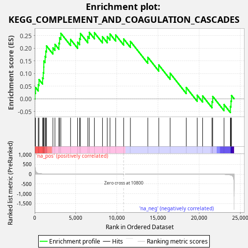
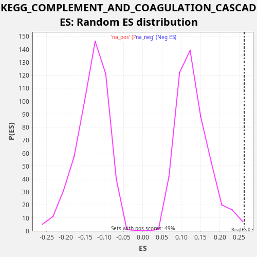

| Dataset | LabCL |
| Phenotype | NoPhenotypeAvailable |
| Upregulated in class | na_pos |
| GeneSet | KEGG_COMPLEMENT_AND_COAGULATION_CASCADES |
| Enrichment Score (ES) | 0.26331344 |
| Normalized Enrichment Score (NES) | 2.0106437 |
| Nominal p-value | 0.0040983604 |
| FDR q-value | 0.029772043 |
| FWER p-Value | 0.309 |

| SYMBOL | RANK IN GENE LIST | RANK METRIC SCORE | RUNNING ES | CORE ENRICHMENT | |
|---|---|---|---|---|---|
| 1 | C1S | 26 | 427.649 | 0.0233 | Yes |
| 2 | C1R | 96 | 179.297 | 0.0449 | Yes |
| 3 | CFB | 428 | 38.800 | 0.0556 | Yes |
| 4 | C4B | 520 | 29.211 | 0.0762 | Yes |
| 5 | F8 | 956 | 13.040 | 0.0826 | Yes |
| 6 | CR2 | 1038 | 11.331 | 0.1037 | Yes |
| 7 | C3 | 1099 | 10.470 | 0.1256 | Yes |
| 8 | PROS1 | 1104 | 10.396 | 0.1498 | Yes |
| 9 | BDKRB2 | 1261 | 7.956 | 0.1677 | Yes |
| 10 | C5 | 1342 | 7.144 | 0.1888 | Yes |
| 11 | CFD | 1432 | 6.315 | 0.2095 | Yes |
| 12 | C5AR1 | 2215 | 2.464 | 0.2016 | Yes |
| 13 | CFI | 2462 | 1.963 | 0.2158 | Yes |
| 14 | C2 | 2944 | 1.237 | 0.2204 | Yes |
| 15 | CD55 | 3020 | 1.168 | 0.2417 | Yes |
| 16 | C4BPB | 3181 | 1.030 | 0.2594 | Yes |
| 17 | VWF | 4360 | 0.440 | 0.2352 | Yes |
| 18 | MASP2 | 5215 | 0.243 | 0.2243 | Yes |
| 19 | SERPINE1 | 5462 | 0.202 | 0.2385 | Yes |
| 20 | C3AR1 | 5558 | 0.191 | 0.2589 | Yes |
| 21 | C8G | 6455 | 0.104 | 0.2463 | Yes |
| 22 | CFH | 6635 | 0.091 | 0.2633 | Yes |
| 23 | PROC | 7257 | 0.058 | 0.2620 | No |
| 24 | CD46 | 8241 | 0.024 | 0.2458 | No |
| 25 | SERPIND1 | 8818 | 0.013 | 0.2464 | No |
| 26 | TFPI | 9157 | 0.008 | 0.2568 | No |
| 27 | C4A | 9843 | 0.002 | 0.2529 | No |
| 28 | C9 | 10818 | 0.000 | 0.2371 | No |
| 29 | PLAT | 11636 | -0.001 | 0.2277 | No |
| 30 | F3 | 13754 | -0.023 | 0.1646 | No |
| 31 | SERPINF2 | 15085 | -0.065 | 0.1341 | No |
| 32 | C6 | 16469 | -0.142 | 0.1013 | No |
| 33 | F2R | 18426 | -0.382 | 0.0449 | No |
| 34 | BDKRB1 | 19762 | -0.759 | 0.0141 | No |
| 35 | SERPING1 | 20421 | -1.074 | 0.0113 | No |
| 36 | PLAUR | 21560 | -2.231 | -0.0113 | No |
| 37 | THBD | 21647 | -2.376 | 0.0095 | No |
| 38 | CD59 | 23025 | -10.074 | -0.0230 | No |
| 39 | PLAU | 23793 | -40.603 | -0.0303 | No |
| 40 | F12 | 23867 | -47.928 | -0.0089 | No |
| 41 | SERPINA1 | 23931 | -57.243 | 0.0129 | No |

{kind=link}
{kind=link}